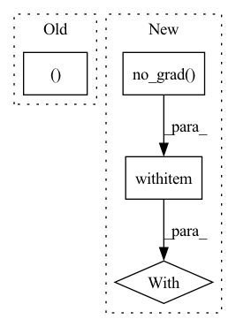

Pattern ID :400
Before Change
x = F.relu(self.fc2(x))
output = self.fc3(x)
if last:
return output, x
else:
return output
def get_embedding_dim(self):
return 256After Change
def forward(self, x, last=False, freeze=False):
if freeze:
with torch .no_grad():
out = self.pool(F.relu(self.conv1(x)))
out = self.pool(F.relu(self.conv2(out)))
out = self.pool(F.relu(self.conv3(out)))
out = out.view(-1, 64 * 4 * 4)In pattern: SUPERPATTERN
Frequency: 3
Non-data size: 4
Instances Fragment ID: 1532567
Project Name: decile-team/distil
Commit Name: 4108c7fe8b81f9f198410bb6b2598f6833329a5e
Time: 2021-04-29
Author: you@example.com
File Name: distil/utils/models/cifar10net.py
M Class Name: CifarNet
N Class Name: CifarNet
M Method Name: forward(4)
N Method Name: forward(3)
M Parent Class: nn.Module
N Parent Class: nn.Module
M File Name: distil/utils/models/cifar10net.py
N File Name: distil/utils/models/cifar10net.py
M Start Line: 17
M End Line: 28
N Start Line: 19
N End Line: 42
Before Change
conv_features = self.__img2embed_conv__(batch_features).permute(0, 2, 3, 1) // (N, block_num, block_num, embed_dim * 0.5)
apool = torch.mean(conv_features, dim = 1) // (N, block_num, embed_dim * 0.5)
mpool, _ = torch.max(conv_features, dim = 1) // (N, block_num, embed_dim * 0.5)
imgs_embed = torch.cat([apool, mpool], dim = 2) // (N, block_num, embed_dim)
After Change
batch = images.shape[0] // (N)
with torch .no_grad():
batch_features = self.__clip__.encode_image(images)
//text_input = self.__get_text_input__(tag_ids)
//batch_texts = self.__clip__.encode_text(text_input) Fragment ID: 1532566
Project Name: siwooyong/codalab-microsoft-coco-image-captioning-challenge
Commit Name: d24b22ec9f0be1acd2f307be20ec85f84f8d8795
Time: 2021-07-08
Author: 68500343+yongsiwoo@users.noreply.github.com
File Name: models/base_model.py
M Class Name: decoder
N Class Name: decoder
M Method Name: forward(4)
N Method Name: forward(3)
M Parent Class: nn.Module
N Parent Class: nn.Module
M File Name: models/base_model.py
N File Name: models/base_model.py
M Start Line: 57
M End Line: 74
N Start Line: 75
N End Line: 97
Before Change
if self.training:
self.new_means = ema(self.new_means, means, 0.5)
return indices, loss
// kmeans attention class
class KmeansAttention(nn.Module):After Change
dists, buckets = dists_and_buckets(x, means)
if update_means:
with torch .no_grad():
means = kmeans_iter(x, means, buckets)
self.new_means = means
routed_means = batched_index_select(expand_dim(means, 0, b), buckets) Fragment ID: 1532569
Project Name: lucidrains/routing-transformer
Commit Name: 2042adb06111339b86814500f0c389759b8f6cdf
Time: 2020-05-27
Author: lucidrains@gmail.com
File Name: routing_transformer/routing_transformer.py
M Class Name: Kmeans
N Class Name: Kmeans
M Method Name: forward(3)
N Method Name: forward(3)
M Parent Class: nn.Module
N Parent Class: nn.Module
M File Name: routing_transformer/routing_transformer.py
N File Name: routing_transformer/routing_transformer.py
M Start Line: 396
M End Line: 410
N Start Line: 367
N End Line: 384